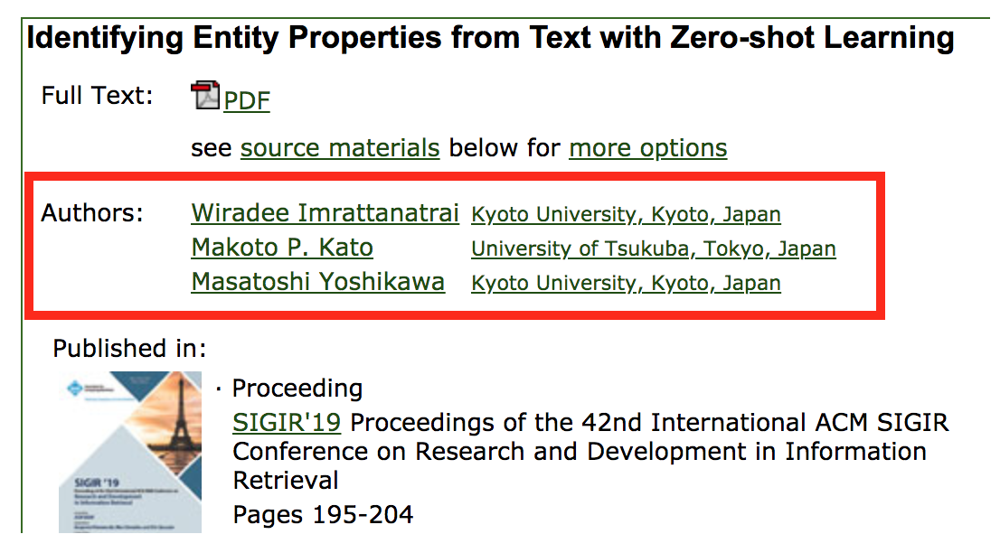

機械学習・データマイニング・人工知能分野周りの日本所属の国際会議論文を集めてみる
Table of contents
概要
学生が研究室を選んだり、企業が共同研究先を選ぶ際に、その研究室がきちんと論文を通している研究室かどうかというのは一つに基準になるかと思います。計算機科学分野、特に機械学習・データマイニング・人工知能分野周りの分野では、企業の研究所が強く速報性が求められる影響などにより国際会議論文の影響力が強い傾向があります。そこで本記事では、これらの分野の国際会議に日本所属で論文を通している人を収集することを考えます。
本記事では機械学習・データマイニング・人工知能分野の国際会議を ML, DM, and AI Conference Map に記載されている国際会議とします。
手法
日本所属の国際会議論文を収集する方法として、現在は目視で収集する方法が主流です。既存のプロジェクトとしては以下のものがあります。
- SIGGRAPH Papers by Japanese Researchers
- IEEE Journals & Magazines - papers published by researchers in Japan
- 日本所属の言語処理トップカンファレンス論文
- 情報検索を研究している日本の研究室一覧
目視で収集する手法の問題点として、スケールしないことがあげられます。さらに近年は機械学習・データマイニング・人工知能分野の国際会議論文は増加している傾向もあり、目視で収集するには限界があります。
そこで今回は ACM Digital Library (ACM DL) のような、各学会や企業が公開している Digital Library の情報を利用して自動で収集することを考えます。Digital Library にはその学会が主催する国際会議やジャーナル論文が登録されており、著者の所属組織とその所在地が記載されています。

Digital Library を利用することで、どの国のどの組織に所属しているかを容易に収集することができるようになるという利点もありますが、別々の国の組織に複数所属している場合でも 1 つの国に所属している扱いになるなど、目視に比べて正確さに欠けるという欠点もあります（今回はこの部分には目を瞑ります）。
収集は以下の手順で行います。
- dblp の該当会議の該当年のページにアクセスし、論文名・著者名・Digital Library へのリンクを収集する
- 論文ごとに収集した Digital Library のリンクをたどり、遷移先のページの著者情報を収集する
上記の手順により、まず、ACM DL を対象として、KDD, CIKM, SIGMOD, PODS, SIGIR, WWW, WSDM, RecSys, STOC について、2016 年から 2019 年の論文を収集しました（ただし CIKM, RecSys は 2019 年は未開催のためありません）。
SIGMOD のデータ例
注: SIGMOD はデータベース分野のトップカンファレンスです。
| 年 | タイトル | 著者 |
|---|---|---|
| 2016 | Local Similarity Search for Unstructured Text | Pei Wang(名大) Chuan Xiao(名大) Jianbin Qin(The University of New South Wales) Wei Wang(The University of New South Wales) Xiaoyang Zhang(The University of New South Wales) Yoshiharu Ishikawa(名大) |
| 2017 | Landmark Indexing for Evaluation of Label-Constrained Reachability Queries | Lucien D.J. Valstar(Eindhoven University of Technology) George H.L. Fletcher(Eindhoven University of Technology) Yuichi Yoshida(NII; PFI) |
| 2017 | Coarsening Massive Influence Networks for Scalable Diffusion Analysis | Naoto Ohsaka(東大; JST) Tomohiro Sonobe(NII; JST) Sumio Fujita(Yahoo Japan) Ken-ichi Kawarabayashi(NII; JST) |
| 2017 | Cryptanalysis of Comparable Encryption in SIGMOD'16 | Caleb Horst(University of Washington Tacoma) Ryo Kikuchi(NTT) Keita Xagawa(NTT) |
| 2017 | Scaling Locally Linear Embedding | Yasuhiro Fujiwara(NTT) Naoki Marumo(NTT) Mathieu Blondel(NTT) Koh Takeuchi(NTT) Hideaki Kim(NTT) Tomoharu Iwata(NTT) Naonori Ueda(NTT) |
| 2017 | QUILTS: Multidimensional Data Partitioning Framework Based on Query-Aware and Skew-Tolerant Space-Filling Curves | Shoji Nishimura(NEC) Haruo Yokota(東工大) |
| 2018 | Managing Non-Volatile Memory in Database Systems | Alexander van Renen(Technische Universität München) Viktor Leis(Technische Universität München) Alfons Kemper(Technische Universität München) Thomas Neumann(Technische Universität München) Takushi Hashida(富士通研究所) Kazuichi Oe(富士通研究所) Yoshiyasu Doi(富士通研究所) Lilian Harada(富士通研究所) Mitsuru Sato(富士通研究所) |
| 2019 | Autocompletion for Prefix-Abbreviated Input | Sheng Hu(名大; 京大) Chuan Xiao(名大; 阪大) Jianbin Qin(Shenzhen University) Yoshiharu Ishikawa(名大) Qiang Ma(京大) |
収集したデータは順次以下のページに掲載予定です。
ML-DM-AI Papers by Researchers in Japan
今後の方針について
最終的な目標としては、ML, DM, and AI Conference Map にある国際会議について全て収集することを考えています。
この中でも、IEEE Xplore や SpringerLink に登録されている論文については同様に集めることが可能です。ただ、IEEE Xplore については所属組織が登録されていない場合も多くあります。また、Neurips/ICML/COLT のような機械学習系や、ACL/EMNLP/NAACL などの自然言語処理系の国際会議については、Digital Library に登録されていないため、この手法で集めることができません。そこで、以下の方法を考えています。
- PDF を収集し、parse する
- 使えそうなツール
- https://github.com/allenai/spv2
- https://github.com/WING-NUS/Neural-ParsCit
- 使えそうなツール
- 著者の他の論文の情報を使う
- 著者の dblp のリンクをたどり、Digital Library へのリンクがある論文を探す
他にやり方がありましたら、ぜひ twitter で @n_knuu6 までお教えいただけますと幸いです。